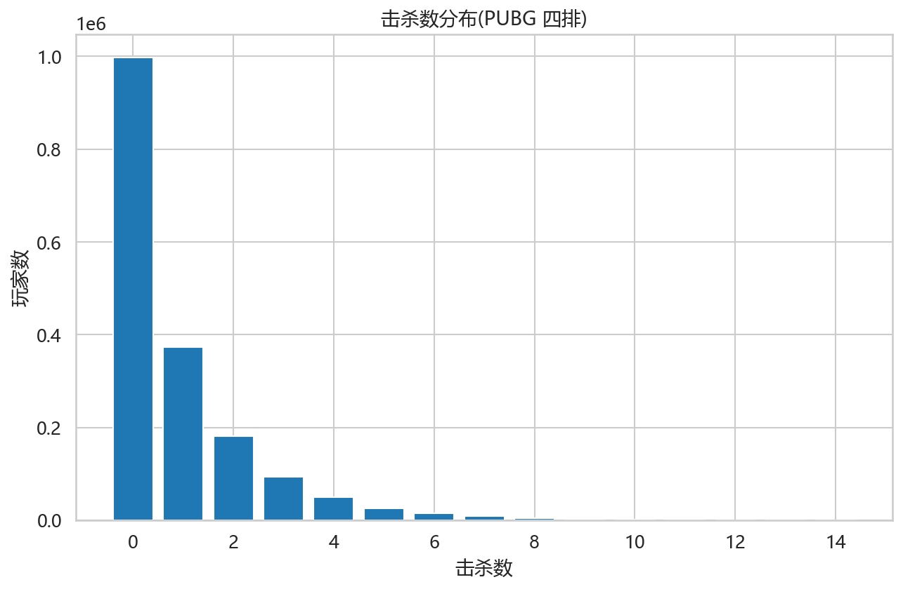
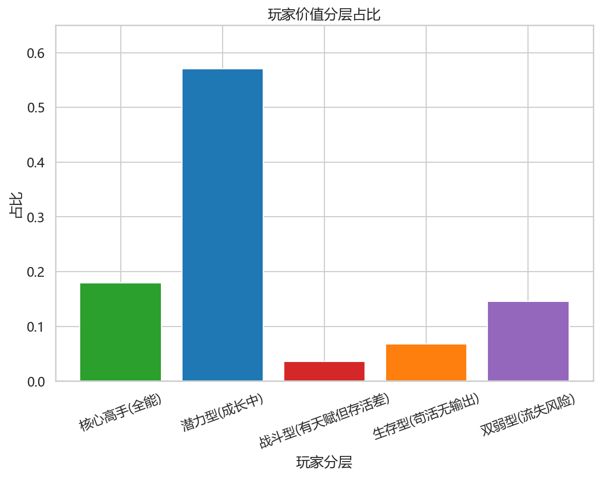
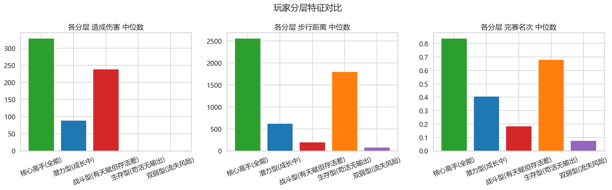

作为数据运营,回答:谁是我们的高价值玩家?他们的行为特征是什么?如何识别和培养?
玩家分层是游戏运营的核心动作。本作品用 PUBG 玩家对局行为数据,回答三个运营问题:
数据源:Kaggle PUBG 官方比赛数据,444 万条玩家对局行为记录,29 个字段。
聚焦策略:全量清洗后聚焦 四排第一人称(占全量 39.8%,最主流模式,最有代表性)。
| 分析维度 | 使用的关键字段 | 业务含义 |
|---|---|---|
| 战斗能力 | 造成伤害 / 击杀数 | 玩家"投入"与"潜力" |
| 生存能力 | 完赛名次 / 步行距离 | 玩家"存活"与"留存" |
| 资源行为 | 捡武器数 / 能量道具 | 玩家的"成长空间" |
玩家击杀数呈典型的 长尾分布 —— 56.8% 的玩家一局 0 击杀,极少数高手贡献绝大部分击杀。

# 击杀数分布:验证"幂律分布"假设 import pandas as pd kill_dist = 四排['击杀数'].value_counts().sort_index() 零杀占比 = (四排['击杀数'] == 0).mean() print(f"0 击杀玩家占比: {零杀占比:.1%}") # 输出: 0 击杀玩家占比: 56.8% # → 超过一半玩家一局 0 杀, 呈典型幂律分布(长尾)
用 战斗维度(造成伤害) × 生存维度(完赛名次) 交叉,建立 5 类玩家分层。为什么用"伤害"而非"击杀"?——击杀是结果,伤害是投入,用投入更能提前识别"有潜力但没结果"的玩家。

| 玩家分层 | 占比 | 画像 |
|---|---|---|
| 核心高手(全能) | 17.9% | 高伤害 + 高存活,顶尖玩家 |
| 潜力型(成长中) | 57.1% | 中坚主体,有成长空间 |
| 战斗型(有天赋但存活差) | 3.6% | 高伤害但存活差,有潜力但莽 |
| 生存型(苟活无输出) | 6.8% | 在线久但无输出,苟活玩家 |
| 双弱型(流失风险) | 14.6% | 0伤害 + 存活差,最需挽留 |
# 玩家价值分层:战斗维度(伤害) × 生存维度(名次) # 用"伤害"而非"击杀",因为伤害是投入,更能提前识别有潜力但没结果的人 高伤害 = 四排['造成伤害'] >= 四排['造成伤害'].quantile(0.75) 零伤害 = 四排['造成伤害'] == 0 高名次 = 四排['完赛名次'] >= 0.5 低名次 = 四排['完赛名次'] < 0.3 四排['最终分层'] = '潜力型(成长中)' 四排.loc[高伤害 & 高名次, '最终分层'] = '核心高手(全能)' 四排.loc[高伤害 & 低名次, '最终分层'] = '战斗型(有天赋但存活差)' 四排.loc[零伤害 & 高名次, '最终分层'] = '生存型(苟活无输出)' 四排.loc[零伤害 & 低名次, '最终分层'] = '双弱型(流失风险)' print(四排['最终分层'].value_counts(normalize=True).round(3))
验证每类的核心指标是否符合预期画像,确保分层稳健。

| 玩家分层 | 造成伤害 | 完赛名次 | 步行距离 | 击杀数 | 捡武器数 |
|---|---|---|---|---|---|
| 双弱型 | 0 | 0.1 | 81.5 | 0 | 1.0 |
| 战斗型 | 239 | 0.2 | 198 | 2 | 2.0 |
| 潜力型 | 88.9 | 0.4 | 619 | 0 | 3.0 |
| 生存型 | 0 | 0.7 | 1796 | 0 | 4.0 |
| 核心高手 | 329 | 0.8 | 2560 | 3 | 5.0 |
审计发现 5.9% 的玩家完赛名次 = 0。这不是异常数据,而是真实的"落地成盒"信号:
| 指标 | 数值 | 解读 |
|---|---|---|
| 平均步行距离 | 45 米 | 开局落地后几乎没动就死了 |
| 平均对局时长 | 1560 秒 | 整局26分钟,但他们只活了最初1分钟 |
| 平均击杀 | 0.1 | 连枪都没摸到 |
这批玩家游戏体验极差(落地秒死、无正反馈),是最容易流失的群体。他们是"双弱型"的极端代表,运营应重点介入。
# 数据审计:名次=0 是异常数据还是真实信号? # 用"真实存活痕迹"(步行距离)判断,而非只看名次字段 零名次 = 四排[四排['完赛名次'] == 0] print(f"名次=0 玩家: {len(零名次):,} 人") print(f" 平均步行距离: {零名次['步行距离'].mean():.0f} 米") # 45米 → 落地即死 print(f" 平均对局时长: {零名次['对局时长(秒)'].mean():.0f} 秒") # 1560秒 → 整局时长 # → 步行45米=开局落地即死, 是真实的"落地成盒"群体, 非异常数据
基于数据洞察,为每类玩家设计差异化的运营策略。
本作品完整走通了数据运营的分析闭环:
处理异常值、统一列名,从 444 万行聚焦到 175 万行四排数据
发现击杀数幂律分布、名次均匀分布
用伤害×名次双维度建立 5 类玩家模型
验证每类特征,发现"落地成盒"流失风险群体
每类玩家给差异化运营策略,数据支撑每条动作